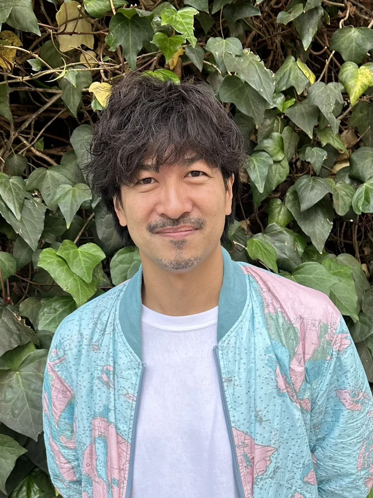

YUICHIRO
横顔のバランスや、髪が乾いたときの形を見ながら、ご自宅で再現しやすいスタイルをつくります。
休日の楽しみ 料理・お菓子作り・園芸
髪を切る人、色を考える人、地肌と向き合う人。
鷹匠でお迎えする、graceのチームです。

横顔のバランスや、髪が乾いたときの形を見ながら、ご自宅で再現しやすいスタイルをつくります。
じっくりお話を伺い、ボブのラインやカラーの透明感など、なりたい雰囲気を一緒に形にします。
丁寧なカウンセリングを通じて、カラーを楽しむ髪のツヤや手触りを整えるケアをご提案します。
お客様が肩の力を抜いて過ごせるように。ご来店時のご挨拶からシャンプーまで、心地よい時間を大切にします。